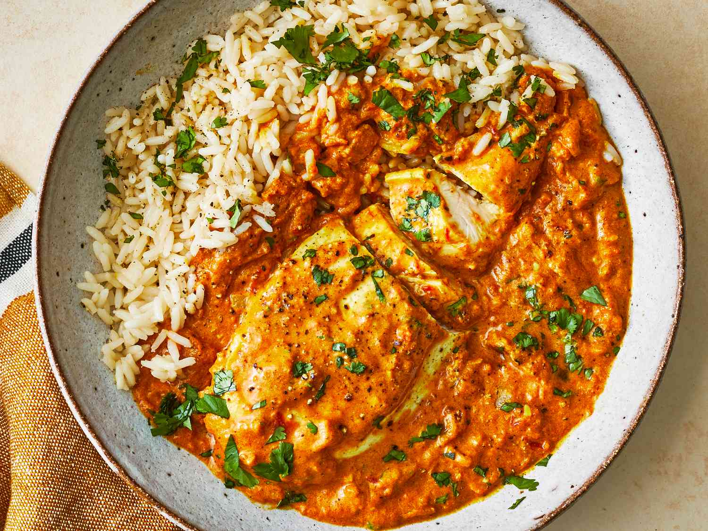

Murgh kari

Ingredients
- 1 kilo chicken breast
- 2 teaspoons salt
- 60 ml cooking oil
- 3 chopped onions
- 3 garlic cloves
- one thumb-size piece ginger
- 1 tbsp curry powder
- 1 tsp cumin
- 1 tsp turmeric
- 1 tsp ground coriander
- 1 tsp cayenne pepper
- 1 can of crushed tomatoes
- 250 ml yoghurt
- 1 tsp garam masala
Instructions
- Gather all ingredients
- Salt the chicken breast and slice into large pieces
- Heat chicken untill browned and set aside
- Heat the onions for 8 minutes, and ginger, spices and garlic and heat untill fragrant
- Add tomatoes, yoghurt and 1 tsp of salt
- Add in chicken and garam masala and if needed a bit of water
- Cover and simmer for about 20 minutes, serve with rice, naan and lemon